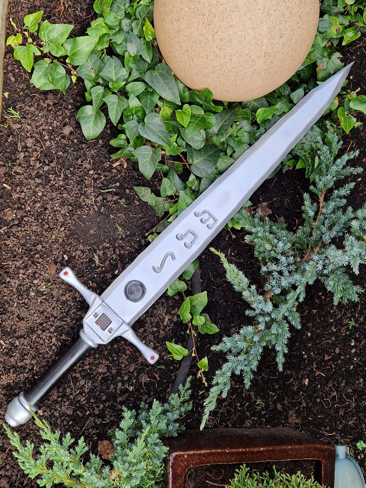
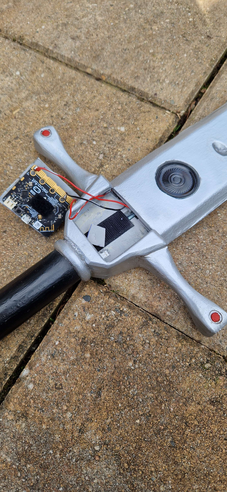
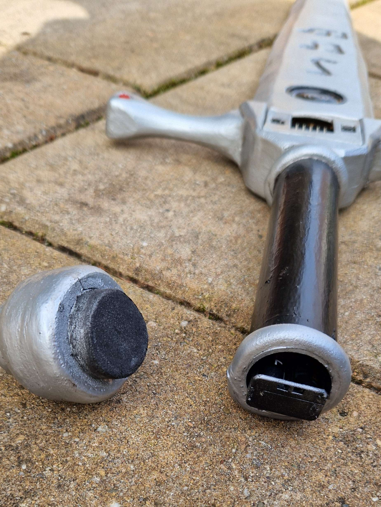
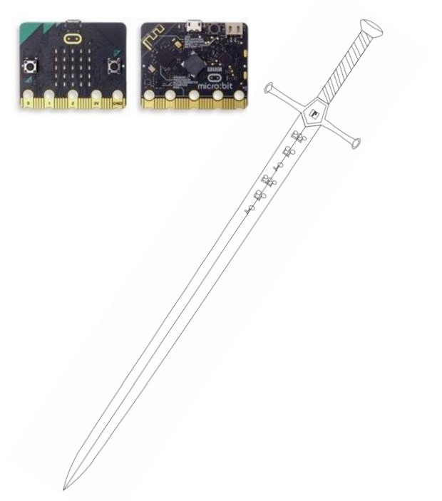

Motion-Reactive Cosplay Sword
The Rave Slayer is an interactive cosplay prop that generates dynamic sound effects based on real sword movements. Using a Micro:bit controller and its built-in accelerometer, the system detects swings and translates them into synthesized audio in real time.
Instead of relying on prerecorded sound files, all audio is generated directly on the microcontroller using waveform synthesis. Different sword movements trigger different sound expressions, creating a responsive audiovisual experience during sword fights or performances.
How it Works
The Micro:bit’s accelerometer continuously measures movement along the X, Y, and Z axes. By repeatedly performing sword swings and analyzing the sensor output through a debugging interface, movement thresholds were calibrated for four different swing directions.
When the sensor values fall within these calibrated ranges, the program triggers a corresponding sound expression.
All sounds are generated using mathematical waveforms (sine waves) rather than audio files. This constraint required designing sound effects directly through parameterized synthesis.
Physical Build
The sword itself was handcrafted using EVA foam, shaped and painted to resemble a cosplay prop.
The internal electronics include:
The controller is attached using Velcro, allowing it to be removed easily for recalibration or further code adjustments.
Project Details
Technical Scope
Project Focus
